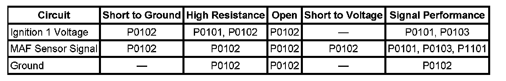
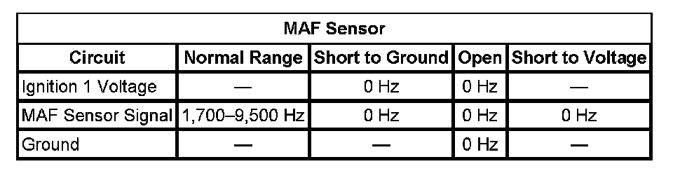

P0103
DTC P0102 or P0103
DTC DESCRIPTORS
DTC P0102
Mass Air Flow (MAF) Sensor Circuit Low Frequency
DTC P0103
Mass Air Flow (MAF) Sensor Circuit High Frequency
DIAGNOSTIC FAULT INFORMATION

Perform the Diagnostic System Check - Vehicle prior to using this diagnostic procedure. Initial Inspection and Diagnostic Overview
TYPICAL SCAN TOOL DATA
MAF Sensor:

CIRCUIT/SYSTEM DESCRIPTION
The mass air flow (MAF) sensor is integrated with the intake air temperature (IAT) sensor. The MAF sensor is an air flow meter that measures the amount of air entering the engine. The engine control module (ECM) uses the MAF sensor signal to provide the correct fuel delivery for all engine speeds and loads. A small quantity of air entering the engine indicates a deceleration or idle condition. A large quantity of air entering the engine indicates an acceleration or high load condition. The MAF/IAT sensor has the following circuits:
- An ignition 1 voltage circuit
- A ground circuit
- A MAF sensor signal circuit
- An IAT sensor signal circuit
- A low reference circuit
The ECM applies 5 volts to the MAF sensor on the MAF sensor signal circuit. The sensor uses the voltage to produce a frequency based on the inlet air flow through the sensor bore. The frequency varies within a range of near 1,700 Hertz at idle to near 9,500 Hertz at maximum engine load.
CONDITIONS FOR RUNNING THE DTC
- The engine is running for more than one second.
- The engine speed is more than 300 RPM.
- The ignition 1 signal is more than 8 volts.
- The above conditions are met for more than one second.
- These DTCs run continuously within the enabling conditions.
CONDITIONS FOR SETTING THE DTC
P0102
The ECM detects that the MAF Sensor parameter is less than 1,867 Hz for more than 5 seconds.
P0103
The ECM detects that the MAF Sensor parameter is more than 14,500 Hz for more than 5 seconds.
ACTION TAKEN WHEN THE DTC SETS
DTCs P0102 and P0103 are Type B DTCs.
CONDITIONS FOR CLEARING THE MIL/DTC
DTCs P0102 and P0103 are Type B DTCs.
DIAGNOSTIC AIDS
- Verify the integrity of the air induction system by inspecting for the following conditions:
- A restricted or collapsed air intake duct
- A misaligned air intake duct
- A dirty or deteriorating air filter element
- Any objects blocking the air inlet screen of the MAF/IAT sensor
- Any water intrusion in the induction system
- Any contamination or debris on the sensing elements of the MAF sensor
- Damaged components
- Loose or improper installation
- Any air flow restriction
- Any vacuum leak
- A wide open throttle (WOT) acceleration from a stop should cause the MAF sensor parameter on the scan tool to increase rapidly. This increase should be from 2-6 g/s at idle to 100 g/s or more at the time of the 1-2 shift.
- Verify that any electrical aftermarket devices are properly connected and grounded. Refer to Checking Aftermarket Accessories. Component Tests and General Diagnostics
CIRCUIT/SYSTEM TESTING
IMPORTANT: All electrical components and accessories must be turned OFF and allowed to power down.
1. Ignition OFF, disconnect the MAF/IAT harness connector at the MAF/IAT sensor.
2. Ignition OFF, test for less than 5 ohms of resistance between the ground circuit and ground.
- If greater than the specified range, test the ground circuit for an open/high resistance.
3. Ignition ON, verify that a test lamp illuminates between the ignition circuit and ground.
- If the test lamp does not illuminate, test the ignition circuit for a short to ground or an open/high resistance.
4. Ignition ON, test for 4.8-5.2 volts between the signal circuit and ground.
- If less than the specified range, test the signal circuit for a short to ground or an open/high resistance. If the circuit tests normal, replace the ECM.
- If greater than the specified range, test the signal circuit for a short to voltage. If the circuit tests normal, replace the ECM.
5. Connect the J 38522 to the vehicle.
COMPONENT TESTING
To determine if the ECM can properly process the MAF sensor frequency signal, connect the J 38522 to the vehicle as follows:
1. Turn OFF the ignition.
2. Connect the battery voltage supply, and ground the black lead.
3. Connect the red lead to the signal circuit of the MAF sensor.
4. Set the Duty Cycle switch to Normal.
5. Set the Frequency switch to 5 K.
6. Set the Signal switch to 5 V.
7. Start the engine.
8. Observe the MAF Sensor parameter for the correct range of 4,950-5,025 Hz.
- If the MAF Sensor parameter is not within the specified range, replace the ECM.
- If the MAF Sensor parameter is within the specified range, replace the MAF sensor.
REPAIR INSTRUCTIONS
Perform the Diagnostic Repair Verification after completing the diagnostic procedure.
- Mass Airflow Sensor/Intake Air Temperature Sensor Replacement
- Control Module References for ECM replacement, setup, and programming. Verification Tests